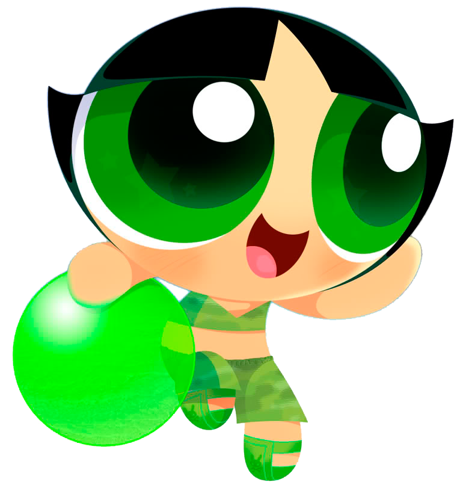

|  |
BUTTERCUP
Bellota (Buttercup en la versión inglesa) y Cactus en España,es una de las protagonistas de las Chicas Superpoderosas. Perfil Ojos: Verdes Cabello: Negro Edad: 6 años Especie: Humana Ocupación: Heroína Personalidad: Ella es muy ruda, es la que más fácilmente se enoja de las 3 chicas. Por todo eso también puede ser irritable, dominante, inútil y excesivamente analítica a veces. También es muy atlética, es reconocida en la escuela por esto. Ella es una chica amable pero no le es fácil demostrar sus sentimientos. Detesta todas las cosas muy femeninas por esta razón no quería unirse al equipo ni usar el traje. Habilidades únicas: Su poder especial es hacer su lengua en forma de taquito. Inicio |